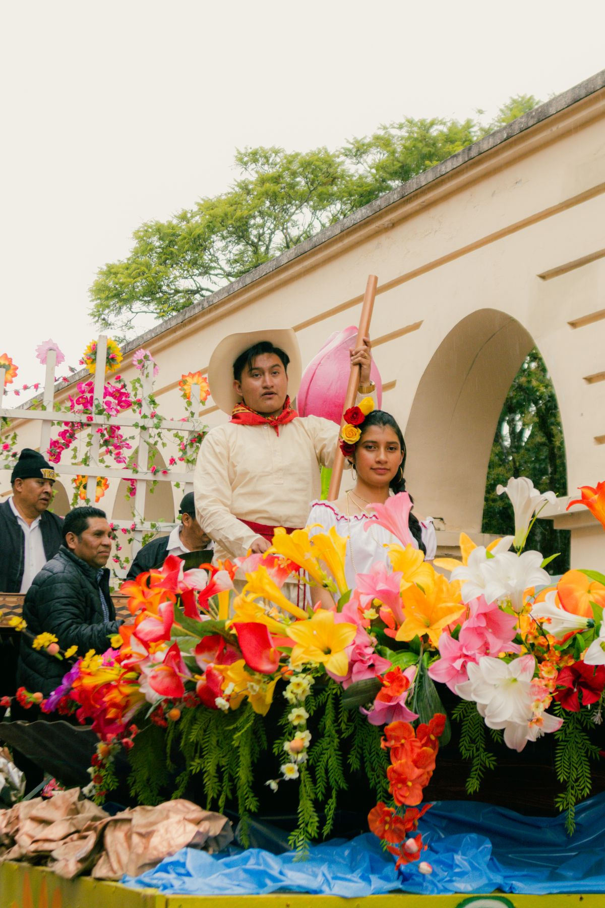

Case File 01 — Bloemencorso Bollenstreek · April 2025
The Heron: the bird that had to duck
Ch. 1The brief
Corso Association Noordwijkerhout asked for a grey heron, neck up and crest high, standing in a ditch of flowers — the bird every member sees on the way to the bulb fields. Class L, 14 metres, judged entry. The drawing they approved stood 4.60 metres at the crest. Nobody had yet measured the route against it.
Ch. 2The survey
Our route survey — walked with a measuring pole before any steel was cut — found two pinch points at 4.00 m: a railway bridge and the town's banner gantry. The parade organisation's regulations set the route limit at the lower of the two. The drawn bird was 60 centimetres too tall, and 60 centimetres is not a rounding error; it is a heron in a bridge.
Ch. 3The dipping neck
Three options were put to the committee in writing: shorten the bird (they refused — the silhouette was the entry), lean the whole body (refused by us — a leaning 14-metre float is a falling one), or build the neck to dip. The neck dips on a hydraulic ram with a counterweight in the breast, over a slew ring at its base. Dipped, the crest passes at 3.85 m. The two dip points were marked on the route sheet, a spotter with a flag walked at each, and the mechanism ran two full cycles on parade morning before the flowers were finished — the rule the Swan wrote, two years earlier.
Ch. 4Flower week
112 m² of hand-pinned dahlias: 42,560 flowers at the printed rate, pinned by a crew of ten over four days, counted backwards from parade morning. The last dahlia went in at 05:40 on the day. The association's own volunteers pinned alongside the workshop crew — their hours are in the file too, because they were worked.
Ch. 5The avenue
The Heron dipped twice, on the flags, and passed at 3.85 m both times. The jury awarded first prize in class to Corso Association Noordwijkerhout — the prize is the association's, as it should be; the programme credits this workshop as builder, which is the whole of our claim. The association chair's words about the build are printed on the cover page, beside this file, where they belong.

Tombstone — The Heron
- Class
- L — 14.0 m
- Height, at rest
- 4.60 m
- Height, dipped
- 3.85 m
- Route limit
- 4.00 m
- Flower surface
- 112 m²
- Dahlias pinned
- 42,560
- Build hours
- 1,230
- Crew-days
- 153.8
- Prize
- First in class — the association's
- Status
- Paraded April 2025 · in store, offered for re-skin